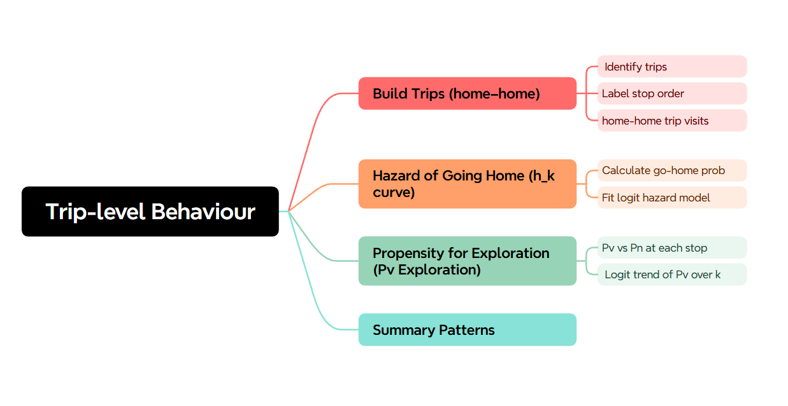

Literature Review & Project Overview
This project uses high-resolution Geolife GPS trajectories to examine everyday mobility as a sequence of discrete visits, trips, and exploration decisions.
The analysis is structured into five Jupyter notebooks.
1. What is EPR?
We examine everyday movement as a balance between revisiting familiar places and exploring new ones. In behavioral terms, most people follow habitual travel routines (e.g., home–work–home) yet occasionally deviate to novel destinations. This “exploit vs. explore” trade-off can be framed by an Exploration–Preferencing Ratio (EPR): a higher EPR means more exploration of new sites relative to returning to known ones. Conceptually, EPR is analogous to the exploration-and-preferential-return model in human mobility research, in which at each move an agent either visits a new location or returns to a past one (Pappalardo, Rinzivillo, & Simini, 2016; Song, Koren, Wang, & Barabási, 2010). Large-scale visitation patterns have been shown to arise from EPR-like dynamics in empirical data (Schläpfer et al., 2021; Song, Qu, Blumm, & Barabási, 2010).
In mobility data, we treat EPR operationally as the ratio of novel stops to repeated stops. For example, if a trip includes three previously unvisited stops (exploration) and one repeated stop, the person’s trip-level EPR would be 3:1, indicating exploratory behavior. In our context, we adapt this idea to individual GPS trajectories by explicitly labelling each stop as either “Pv” (previously visited) or “Pn” (novel), and then modeling the patterns of Pv/Pn occurrences within trips.
In our data, we operationalize this by labelling each non-home stop as Pn (novel) if it is the first time the user has stopped at that particular location, or Pv (visited) if it falls at a location the user has visited before. Over a trip (home → … → home), we then summarize the trip’s exploratory tendency by, for example, the count of Pn stops or the ratio Pn/(Pv + Pn). A person’s overall EPR can be aggregated from their trips (e.g., average per-trip exploration rate).
This trip-focused EPR differs from classic probabilistic models (e.g., the EPR model of Song et al., 2010) in that we measure empirical behavior rather than impose a fixed probability of exploration (Song et al., 2010). Prior literature has examined related metrics: Pappalardo et al. (2015), for instance, show that individuals cluster into “explorers” (many new locations) or “returners” (few new locations) based on visit-count ratios. Our approach is similar in spirit but works at the granularity of trips and discrete stops.
We also draw on ecological ideas of foraging: just as people navigating information maximize an information-gain rate by choosing to explore “new patches” only when the expected gain outweighs the cost (Pirolli & Card, 1999; Nielsen, 2019), travelers may implicitly weigh the novelty of a potential stop against its travel or time cost. We do not explicitly model that decision rule, but the EPR encapsulates its outcome. In short, EPR is the key behavioral concept linking individual choices of revisiting vs. exploring, and our goal is to measure it from trajectory data.
2. Data Processing: From Raw GPS to Home–Home Trips
We apply the methodology to the Microsoft Geolife GPS dataset (184 users, multi-year GPS tracks; Zheng, Xie, & Ma, 2010). We first convert raw GPS points into semantically meaningful visits (stay points). Using standard trajectory-mining techniques, consecutive GPS fixes that lie within a small spatial radius (e.g., ≈100 m) for a minimum dwell time (e.g., ≈10 minutes) are aggregated into a stay point (Zheng et al., 2009; Zheng, Zheng, Xie, & Yang, 2010). Formally, a stay point is defined by a cluster of points 𝑃={𝑝𝑚,…,𝑝𝑛} such that the spatial diameter of 𝑃 is below a distance threshold and the time between 𝑝𝑚 and 𝑝𝑛 exceeds a time threshold (Zheng et al., 2009). Each stay point is then assigned a centroid location and arrival/departure timestamps. This filters out GPS noise and moving intervals, yielding a sequence of places (visits) with clear stop durations.
Next, we identify each user’s home location as the most frequently visited place. Empirically, the single location with the highest visit frequency corresponds to home (González et al., 2008; Pappalardo et al., 2015). This matches the intuition and prior work that the place of maximal stationary probability is likely home. After determining home, we segment the cleaned trajectory into home–home trips: each trip begins when the user departs home and ends upon the next return home. In practice, we slide through the stay-point sequence, cutting a trip whenever the location is home, and discarding any days/trips that have no return. This yields a set of disjoint trips per user (e.g., morning commute, shopping trip), each being a sequence: Home → Stop1 → Stop2 → … → StopK → Home. (Home appears only at the trip start and end; intermediate stops exclude home by definition.)
Within each trip, we then label every non-home stop as Pv or Pn. We maintain a running history of all places the user has visited so far (across all days). A stop is labeled Pn (novel) if its location did not appear earlier in that user’s history, and Pv (visited) if it matches a previously seen location. Home itself is always familiar (Pv). In this way, each trip is converted into a sequence of binary labels (Pv/Pn) along with durations and distances. The count of Pn stops in the trip (or fraction of stops that are Pn) serves as the empirical measure of that trip’s exploratory character, directly implementing our EPR concept.

3. Trip-level behaviour within a single user
Given the trip sequences with Pv/Pn labels, we model two aspects of trip behavior per step.
First is the hazard of returning home (trip termination). We treat each trip as a discrete-time survival process: at each stop (time step) until the trip ends, there is a probability that the user returns home in the next step. Following Singer and Willett’s discrete-time survival framework, we fit a logistic hazard model in which the trip is “exploded” into multiple rows, one per stop, with a binary outcome indicating whether the next step is Home (return = 1) or not (0) (Singer & Willett, 1993). We then regress this outcome on covariates available at that step (for example, number of stops elapsed, time since departure, whether the last stop was novel, etc.). This yields a discrete-time hazard model of going home, capturing how trip continuation risk evolves with trip context. Conceptually, it answers questions like: given that I have visited X stops so far (perhaps including a new site), what is the probability I will head home next?
Second, we explicitly model the exploration tendency at each step. Here the binary outcome is whether the current stop is novel (Pn) versus familiar (Pv). We fit a logistic regression (or similar classification model) for “explore = 1” at each stop, using predictors such as trip length so far, time of day, day of week, distance from home, and so on. This regression tells us how the probability of visiting a new location depends on the trip’s progress and context. Equivalently, one can think of this as a trip-level “EPR regression” that predicts Pn vs. Pv for each stop.
In both models we include basic contextual controls (trip duration, step index) so that each user’s parameters reflect their intrinsic behavior rather than trivial mechanical factors. Fitting is done separately for each user so that everyone gets their own personalized hazard and exploration models. In practice we ensure users have enough trips to fit a model reasonably (e.g., ≥30 trips). The result of this step is, for each user, a vector of model coefficients (plus an intercept) summarizing their trip-termination and exploration behaviors.

4. Cross-User Comparison: PCA and Clustering of EPR Profiles
Finally, we compare users in the space of these model-derived behaviors. Each user’s model yields a feature vector (e.g., [hazard intercept, hazard slope, exploration intercept, exploration slope, …]) that encodes their tendency to explore and to return. Since this vector may be high-dimensional, we first apply principal components analysis (PCA) to reduce dimensionality and identify the main axes of behavioral variance. PCA reveals whether users vary along, for example, a “high-exploration vs. high-preference for revisitation” spectrum or along other blended factors.
We then apply k-means clustering (with k chosen by silhouette or cross-validation criteria) to group users into behavioral phenotypes based on their PCA scores. Prior work has shown that clustering mobility patterns often yields well-separated groups defined by exploration intensity and travel range (Liao et al., 2019; Pappalardo et al., 2015; Zhao et al., 2021). In our case, the clustering identifies typical EPR/hazard profiles in the population—for example, “local explorers” (generally short trips but often to new places) versus “long-distance returners” (travel far but largely between the same hubs). We can then summarize each cluster by its mean EPR, radius of gyration, and similar indicators, and interpret it in behavioral terms.
Throughout, we ensure clarity of interpretation: model coefficients correspond to intuitive concepts (e.g., a large negative hazard intercept means trips end quickly; a large positive exploration slope might mean each additional stop reduces the chance of further exploration). By casting them into PCA space, we make it easier to describe major behavioral dimensions. Altogether, this pipeline—from raw GPS to stay points, from trips to Pv/Pn labeling, from trips to individualized discrete-time models, and from models to a population summary—creates a coherent methodology for analyzing exploration versus revisitation in human mobility.